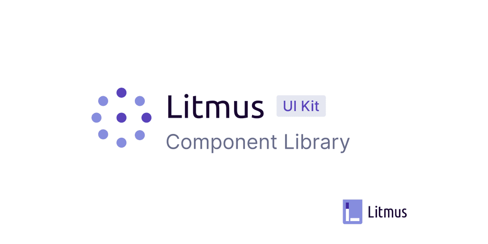
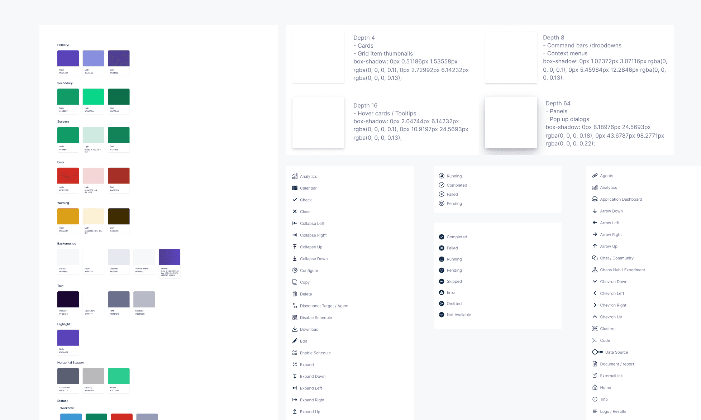
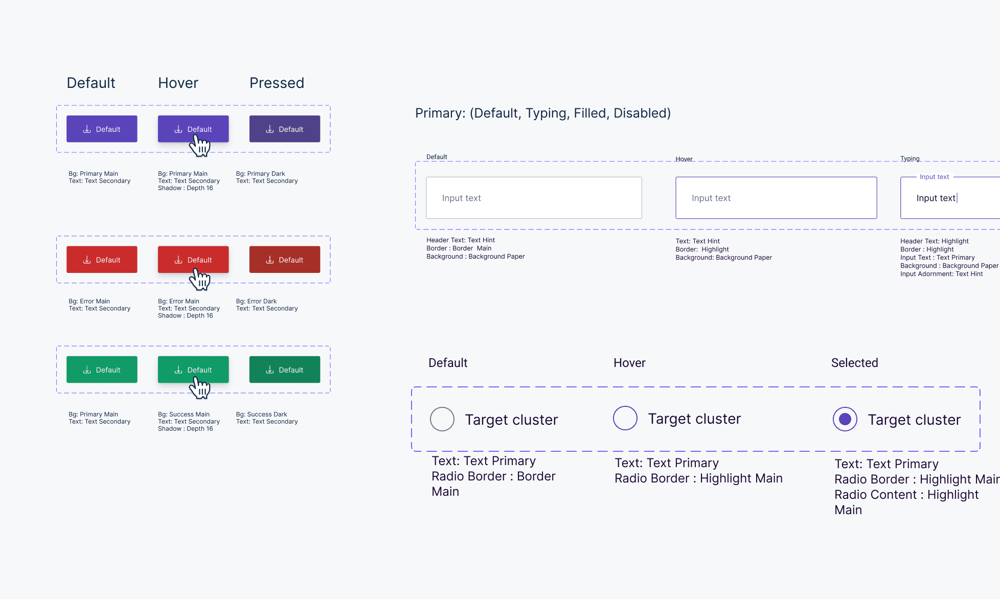
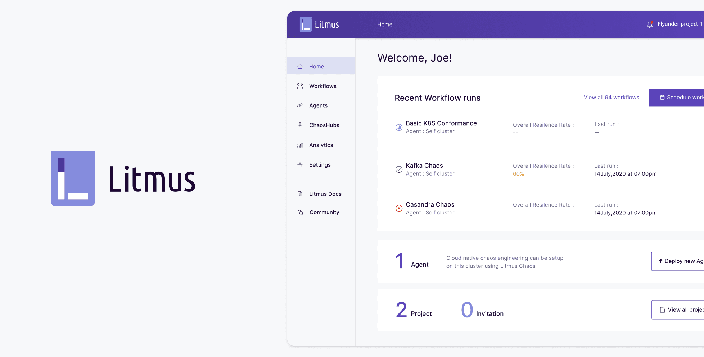

Building a resilient design system
Behind the scenes of the LitmusChaos design system: how two engineers and I turned a scatter of one-off screens into a shared language, a colour system, a component library and a theme that re-skins the product in a snap.

00
The problem
In software development and design we often have to ship one-off solutions. Sometimes we're working against the clock; sometimes we simply haven't agreed on a way forward yet.
Those one-offs aren't inherently bad, but when they aren't built on a solid foundation we eventually end up paying back accumulated technical and design debt.
Visual language is like any other language. Misunderstandings arise when it isn't shared and understood by everyone using it, and as a product or team grows, those gaps compound.
A unified system builds better and faster.
Design has always been largely about systems, and about creating products in a scalable, repeatable way. A unified design system is essential for building better, because a consistent experience is more easily understood by users, and faster, because it gives everyone a common language to work with.
01
Why we need a design system
The company had grown a lot over the years, and we clearly needed more efficient ways to guide and use our collective effort. These challenges showed up inside the organisation, but they are symptoms of wider software-industry problems.
Multiple designers and stakeholders
Software is built by teams, sometimes very large ones. The challenge of creating coherent experiences grows dramatically as more people are involved. And over time, no matter how consistent or small a team is, different people contribute new solutions and styles, and the experience drifts apart.
Software as a continuum
Unlike physical products, software doesn't wear out and get replaced. Code and designs made years ago still exist in many places, long after the company and its product have moved on. That demands constant maintenance and updating.
02
Getting started
To work through these challenges and keep decisions fast, I teamed up with two talented front-end developers who explained the programming and technology constraints: how JavaScript objects and variables work, and how React theming does.
We cleared our calendars and for around two weeks went through every design of every product, noting the common elements and colour schemes, and then planned the system.
Laying the foundation
Looking across the products, the same things kept appearing: buttons, input fields and so on, differing only in colour, iconography and small details. So we needed common ground for all of them, and created a colour system, shadows and iconography.

Creating the components
There can be many components, and we couldn't tell how each team had built theirs: one product had a container component where another used a grid. The developers suggested standardising on a common JavaScript library, and we chose Material Design. Reading through its component guide made it easy to know which components we definitely needed, assign their properties and create variants.

Compiling the library
As we created components we collected them in a master file, the library, which we referred to throughout the design process. Within a week or two we saw huge leaps in productivity when iterating on designs.
It became easy to re-skin the product to a partner company's colour guide, like Accenture's asure or Nagarro's nsure. Re-colouring every element used to take weeks; now it takes a snap of the fingers, Thanos-style. The library also guides the design of upcoming products.

03
Lessons learned
We knew this was a challenging project. It meant redesigning and rebuilding the majority of the views in our software, and like any project there are things we'd do differently.
It was a monumental task that needed effort from many product teams, but creating our design language system was worth the investment and a huge leap forward. Because the design language and code are shared, we can now build and release features on all platforms at roughly the same time.
Development is faster, since product engineers focus on feature logic rather than view code, and engineers and designers now share a common language. With these systems in place we can focus on the actual user experiences and concepts we want to create next.